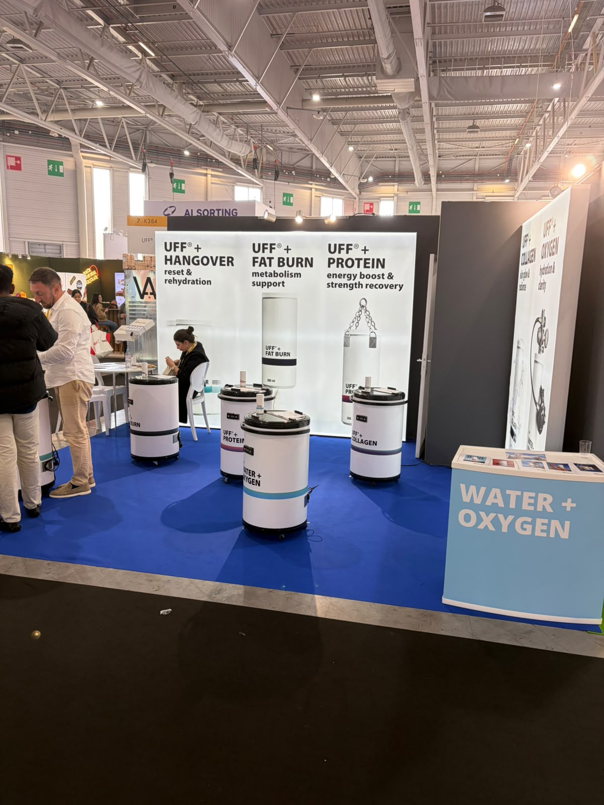
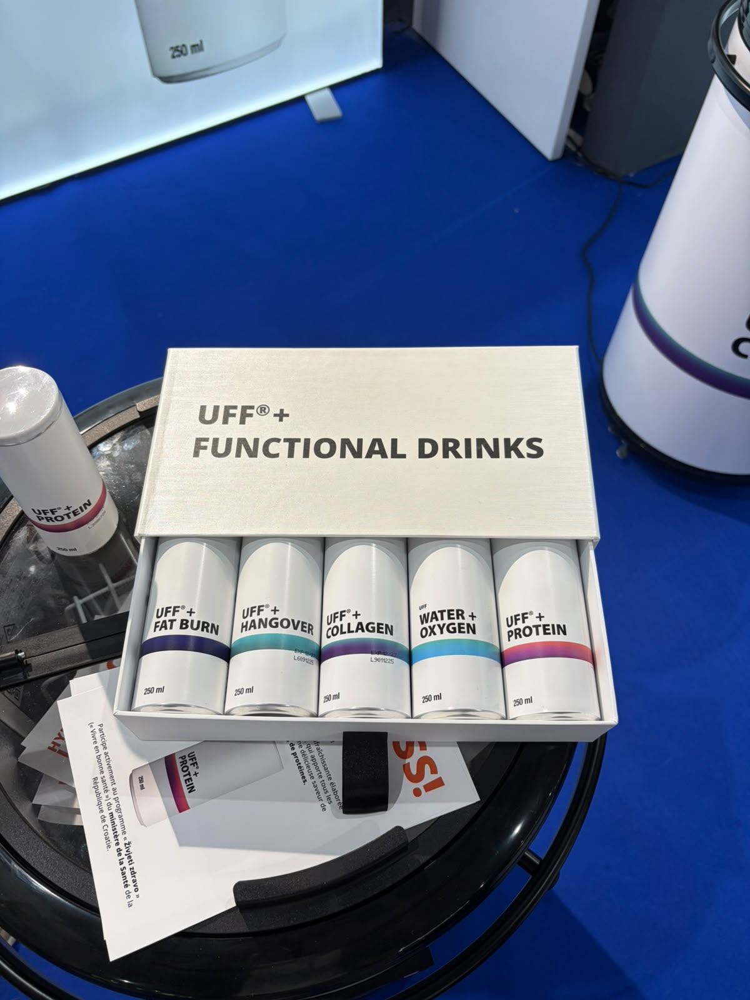
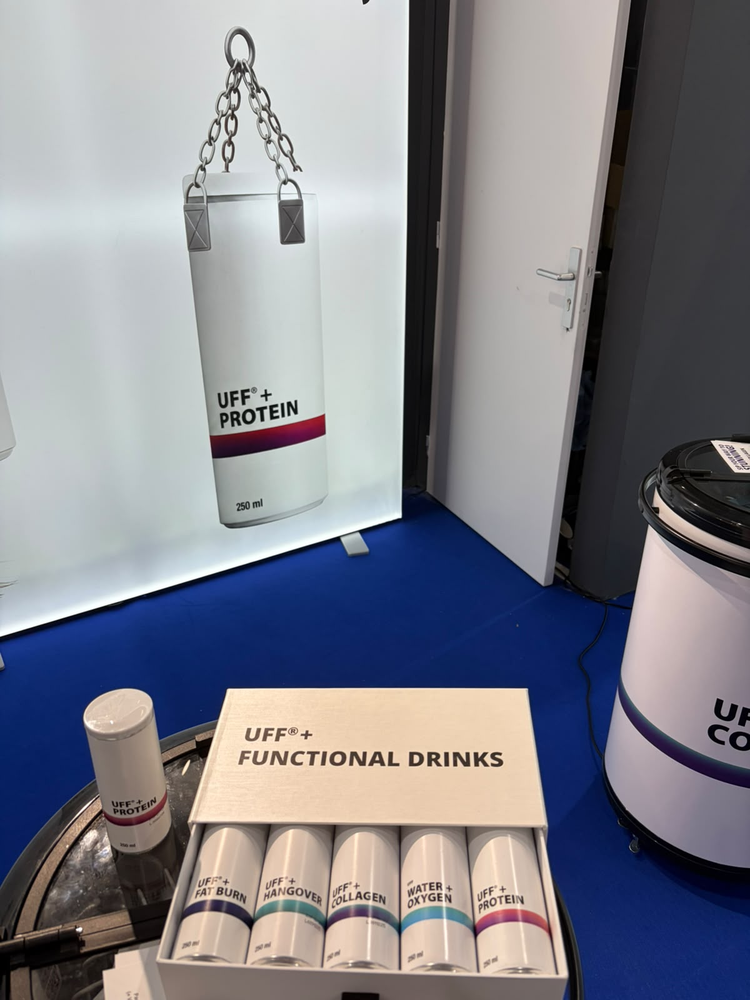
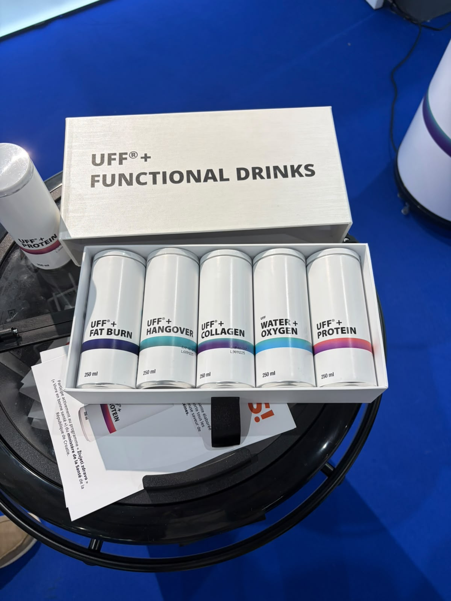
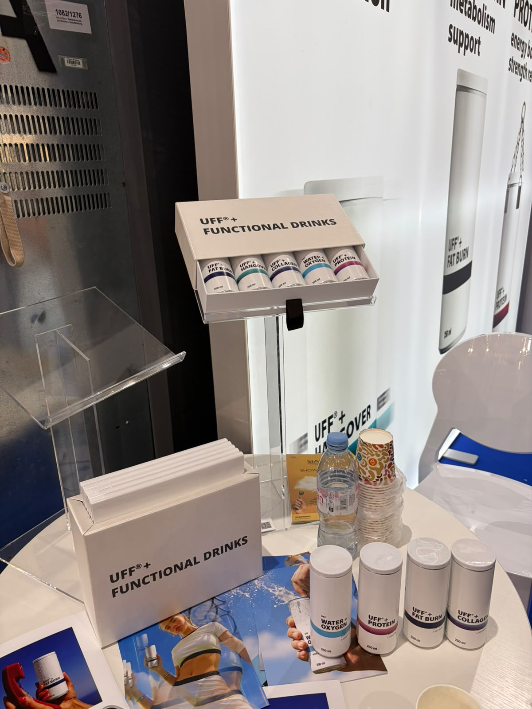
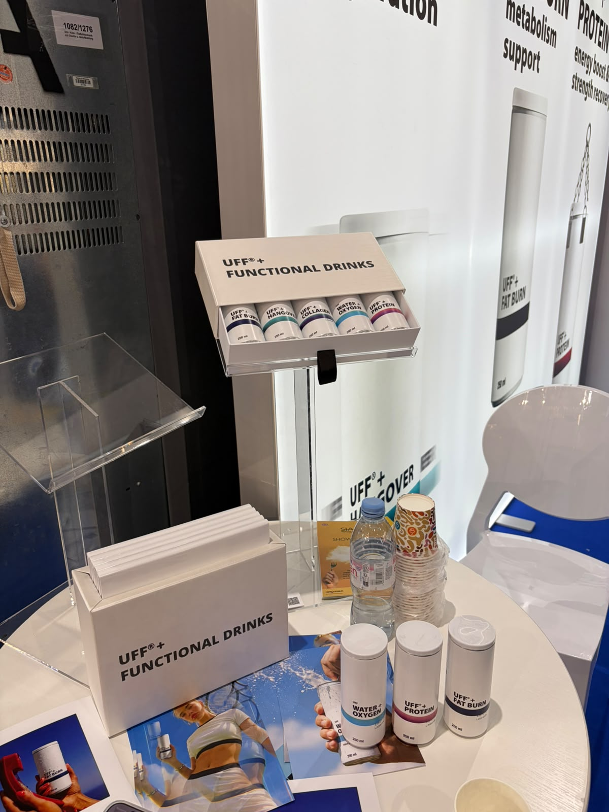
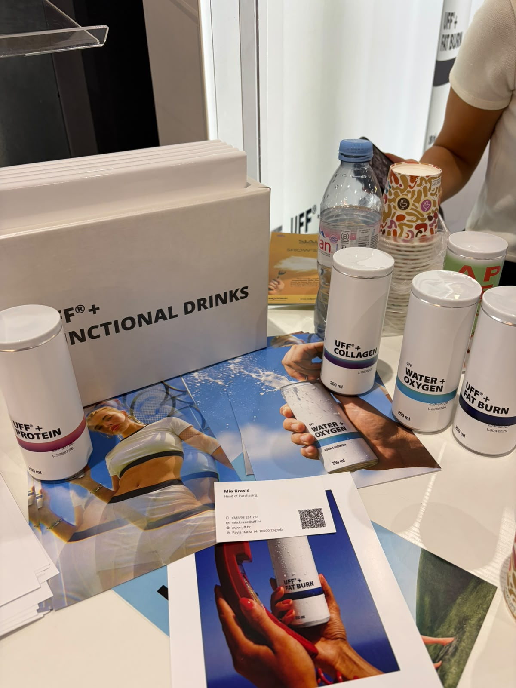
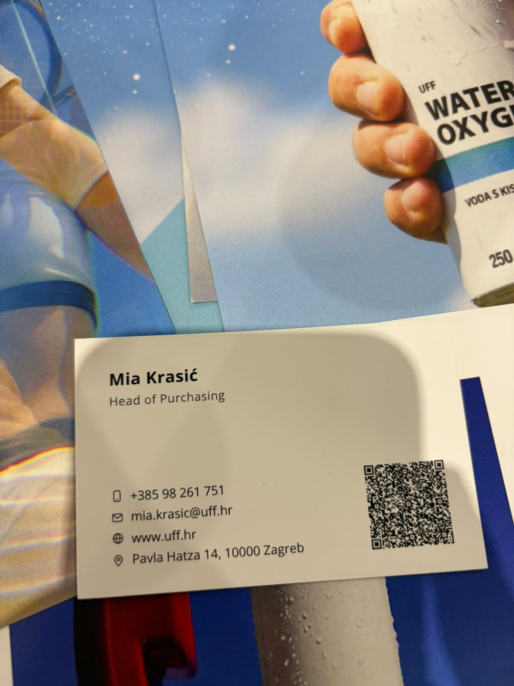
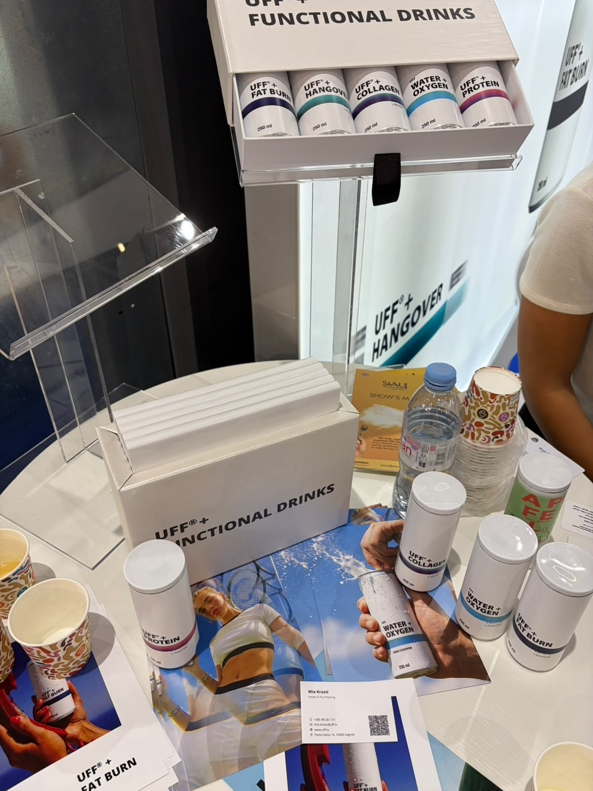

UFF+
مشروبات وظيفية
الوكيل الحصري في السعودية
لم يُعثر في البحث العام على دليل موثوق يثبت وجود وكيل حصري لهذه الشركة في السعودية أو ينفيه. لا تُعدّ السوق متاحة حصريًا قبل رد الشركة.
- الجهة
- لم تُثبت جهة سعودية محددة
- نطاق الدليل
- UFF+
- تاريخ البحث
- 21 أكتوبر 2026
الخطوة التالية: طلب تأكيد مكتوب باسم الوكيل، ونطاق السعودية، والعلامات والأصناف وقنوات البيع، وسريان الحصرية.
المصادر وطريقة التحقق
- الموقع المرجعي للشركة / صفحة التواصل
مرجع للاستفسار المباشر؛ ليس شهادة بعدم وجود وكيل.
بحث باسم الشركة والعلامات مع السعودية والتوزيع والوكالة، ومراجعة المصادر العامة المتاحة. لم يتم التواصل مع الشركة أو الاطلاع على عقد وكالة.
المنتجات والمجال
- سلسلة UFF+ PROTEIN وCOLLAGEN
- WATER + OXYGEN — 250 ml ظاهر
- منتجات باسم FAT BURN وHANGOVER كما على العبوات؛ الأسماء لا تثبت الفوائد الصحية
بطاقة الملف
الجناح
غير مثبت
العنوان
غير موضح
حالة المتابعة
صور وبيانات المعرض محفوظة — لم يُعتمد توريد
وسائل التواصل
Mia Krasić
Head of Purchasing
بطاقة الأعمال المصورة في المعرض بتاريخ 18 أكتوبر 2026
ملاحظات الملف
اسم Uff doo موجود بقائمة الدعوات السابقة في 7 K384؛ ربط الاسم القانوني بالعلامة يحتاج تأكيدًا. عنوان البطاقة Pavla Hatza 14, 10000 Zagreb.
أوصاف المنتجات والفوائد الواردة على العبوات منسوبة للمصنع، وليست تقييمًا طبيًا أو اعتمادًا للتوريد.
الصور وبطاقات الأعمال
اضغط على الصورة لفتح الأصل بالحجم الكامل.


















